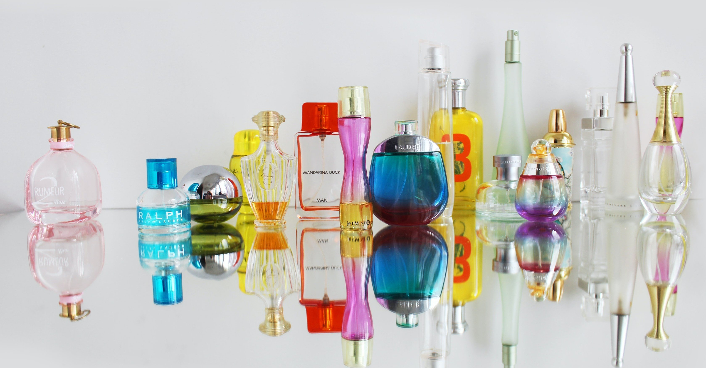

今、YOASOBIさんの「夜に駆ける」とヒットチャートでしのぎを削っているのが、瑛人さんが歌う「香水」だ。
僕は音楽に関する専門家でもなければ、流行の楽曲を知り尽くす熱心な邦楽リスナーでもない。
しかし、一つ言いたいことは「かつて恋した人との日々をドルチェ&ガッパーナで思い出してみたかった」という、ただそれだけのことだ。
ドルチェ&ガッパーナとは、イタリアの代表的なラグジュアリーファッションブランド。歌詞に登場する香水とは、まさにドルチェ&ガッパーナを指している。
もちろん、先述した願いを秘めた哀しい男なわけだから、ドルチェ&ガッパーナというお洒落なブランドなど知る由もない。
いかほどのものか興味本位でWeb検索してみると、さすが高級ブランドといったところか、一万円を超える香水がいくつも紹介されていた。
僕と香水のファーストコンタクトは、高校一年の夏。当時仲のよかったクラスメイトがシトラスの香水をつけて現れたのが出会いだった。
中学二年の頃から周囲が突然髪にワックスをなじませ始めるように、「高校にあがると今度は香水が必要になるのか」と当時は衝撃を受けたものだ。
結局、僕自身は香水をつける勇気を持つことは一度もなく今日を迎えてしまったわけだが、匂いとは不思議なもので、初めて体感した香水の匂いはなぜか今でも思い出すことができる。
しかし、その匂いに付随してくる記憶は男友だちの顔なのだから、こちらとしてはあまり得なことがないのが悔やまれる。
そんなバックグラウンドがあるせいで、僕はしばらく瑛人さんの「香水」を食わず嫌いして聴いていなかったが、YouTubeなどであまりにも多くの歌手や有名人がカバーするものだから、あえなく根負けしたのだった。
そうしたら予想を上回る名曲で、これまでYOASOBIさんの「夜を駆ける」派だったはずが、今は心が「香水」に傾き始めている。
ドルチェ&ガッパーナ、恐るべし。
瑛人さんのおかげで、香水との思い出が更新されそうだ。
https://www.youtube.com/embed/9MjAJSoaoSo?rel=0